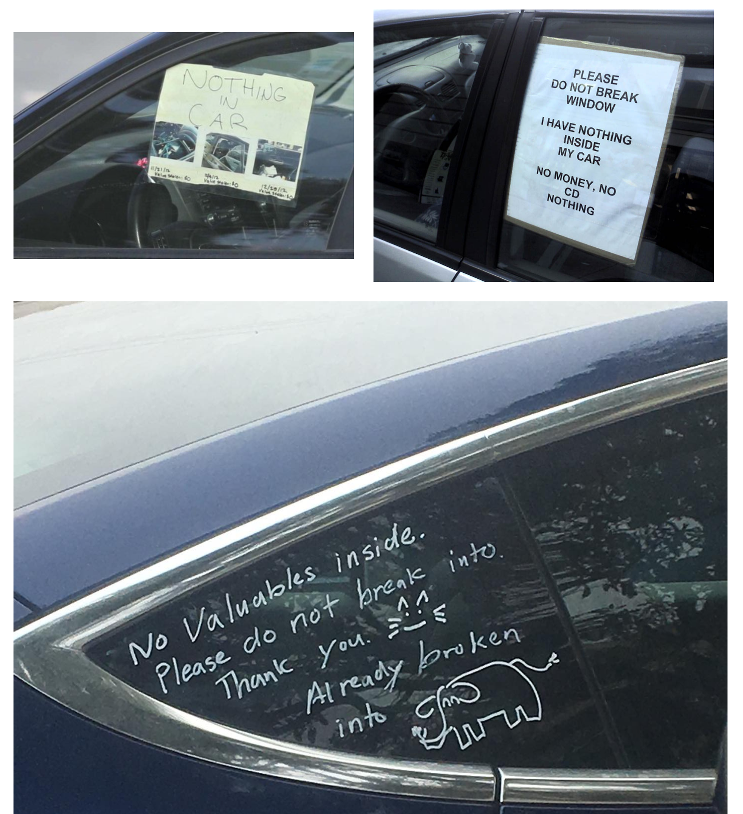

Project Introduction
Introduction
The Car Break-in nowadays might be the most notorious crimes in the San Francisco City, tourists, local residents, anyone who has accidentally left their bag in their car may lost their valueable goods in seconds, only left the victims with a car full of shattered glasses. In San Francisco, thieves get away with car break-ins more than 98 percent of the time, according to the District Attorney’s Office.

Project Description
This project will focus on the relationships between racial, geographic location, and common crimes like car break-ins, in the United States, especially around the Bay Area. And there will be two major question for me to analysis:
- What variables contribute to the car breakin in San Francisco?
- How twitter is doing as a platform reporting Car break-in crimes in San Francisco?
The reason I chose this topic is that I was surprised by the surging number and the commonalities of car break-ins around the Bay area in recent years, and I also personally got broke-in twice. :( I want to dig in and research the potential correlation and the reason between those data. If possible, I hope the project could develop into an online crime report and projection database so that people would see the chance to experience car break-ins and the place they park. So the project needs some regression and projection techniques and experience creating a database.
More Data science question
- What’s the importance of understanding the cause of car break-in problem?
- Does the education level across districts plays an effect?
- Does the race plays as a factor of who commiting the crimes?
- Will community with higher price has lower cases?
- When does the most car break-in happens?
- Which district the most car break-in happens?
- What’s the effect of policy placed on the number of crimes?
- Is there any trend in number of crime reports in the past two years?
- How can we target the increasing(if any) crime rate?
- What can we learn from this research of the larcenry from vehicle?
Across the country, cities are facing a growing number of car breakin accidents, however, San Francisco might be the the worst out of all the cities share this infamous title and it already starts to driving tourists away from this beautiful city. The reasons behind this is complex, both policitally and economically, but I will only focus on the data and tring to figure out what may contribute to the car breakins and is there a chance for us to finally solve it?